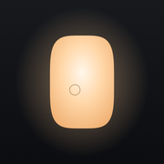

Softbox
Smart lighting for the Elgato Key Light.
Elgato's app can't automate the light. Softbox can: from the Mac menu bar, from the iPhone, from Shortcuts. And when Claude needs you, the light breathes.
Install on your Mac
curl -fsSL https://github.com/danordanor/softbox/releases/latest/download/get.sh | bashPaste it into Terminal. You need the Elgato Control Center app, paired with your light once. Run the same line again to update.
What it does
- The whole light is the control: across is warmth, up is brightness.
- Presets you place on the light, in the menu bar and on the iPhone.
- Shortcuts actions, so any automation can set the light.
- Three soft breaths when Claude Code is waiting for you. No sound, no popup.